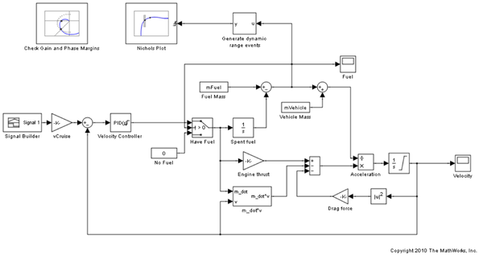
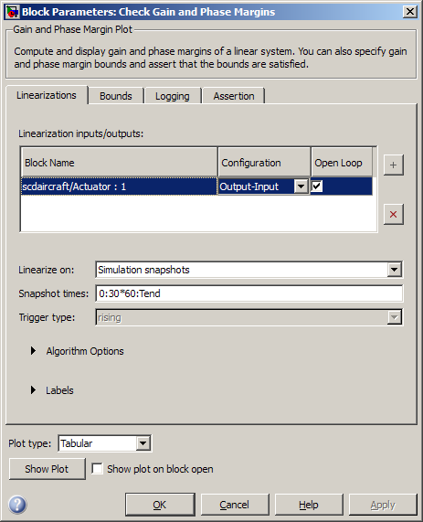
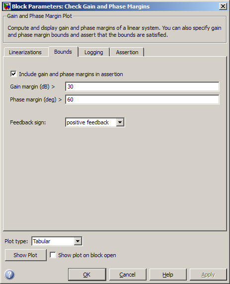
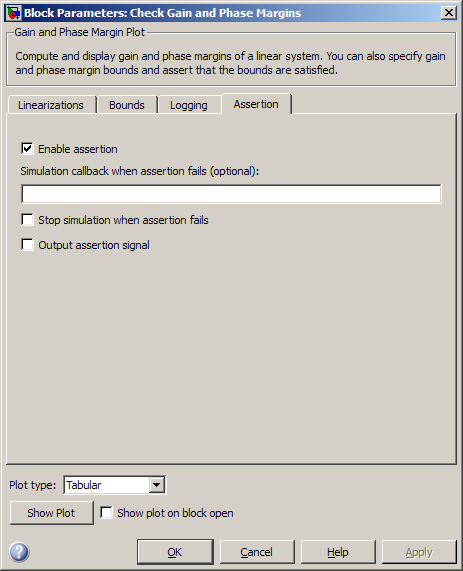
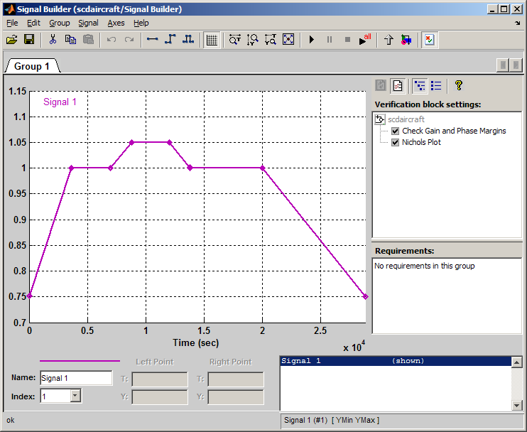
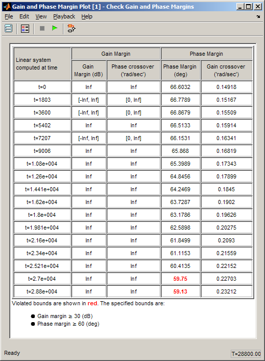
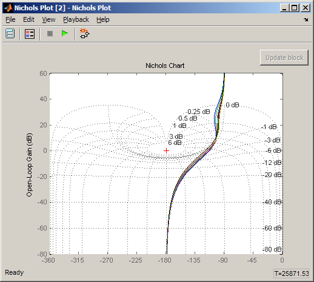
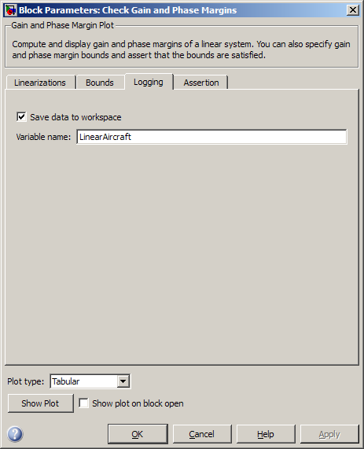

Verifying Frequency-Domain Characteristics of an Aircraft
The Simulink® Control Design™ software provides blocks that you can add to Simulink® models to check that the model's linear response satisfies frequency-domain characteristics during simulation. In this demo, the gain and phase margins of an aircraft velocity control loop are checked as the fuel load changes.
Contents
Aircraft Model
Open the Simulink model of an aircraft:
open_system('scdaircraft')
 The aircraft model is based on a long-haul passenger aircraft flying at cruising altitude and speed. The aircraft starts with a full fuel load and follows a pre-specified eight hour velocity profile. The Simulink model is a much simplified version of a velocity control loop which adjusts the fuel flow rate to control the aircraft velocity. The model includes elements to model fuel consumption and resulting changes in aircraft mass as well as nonlinear draft effects limiting aircraft velocity. Constants used in the model, such as the drag coefficient, are defined in the model workspace and initializated from a script.
Verifying Loop Gain and Phase Margins
The aircraft model contains a Check Gain and Phase Margins block from the Simulink Control Design Model Verification library. This block computes the linearization of the loop seen by the Velocity Controller block every 30 minutes of simulated time.

The block computes the loop gain and phase margins and checks that:
- The gain margin is greater than 30 dB
- The phase margin is greater than 60 degrees
When computing the margins, the loop feedback sign must be specified. To determine the feedback sign, check if the path defined by the IOs includes the feedback summation:
- If the path includes the summation block, use positive feedback.
- If the path does not include the summation block, use the feedback defined by the summation block.
The linearization IOs specified in the Check Gain and Phase Margins block includes the summation block with negative feedback. Therefore, the feedback sign used to compute the gain and phase margins must be positive.

The block shows the computed gain and phase margins in a tabular format. Clicking Show Plot button opens the tabular display.
The Assertion tab in the block specifies that a warning be thrown when the assertion fails, i.e., the gain and phase margins are not satisfied.

The model also includes a Nichols Plot block from the Simulink Control Design Linear Analysis Plots library, which computes the loop response as the fuel mass drops during the simulation. The Generate dynamic range events block generates a rising edge whenever the fuel mass is a multiple of 10% of the maximum fuel mass. These rising edges trigger a linearization and display the results on the Nichols plot. The Show Plot in the Block Parameters dialog box opens the Nichols plot.
The Signal Builder block in the model defines the velocity profile for the aircraft. If Simulink Verification and Validation™ software is installed, double-clicking the block shows the Verification Manager Tool which displays the check blocks included in the model. See Using the Verification Manager for more information.

To check if the specified gain and phase margins are satisfied, simulate the model by clicking the Start simulation button in the Signal Builder block window or the Simulink model.
sim('scdaircraft');
Warning: Assertion detected in 'scdaircraft/Check Gain and Phase Margins' at time 27020.4


The tabular display shows:
- The times when the control loop is linearized.
- The computed gain and phase margins.
Margins that violate the specified bounds are shown in red. The phase margin bound is violated towards the end of the simulation when the fuel mass and airplane velocity have dropped. The Nichols plot indicates the small loop response variations as the fuel load and aircraft velocity change.
The table shows that the linearizations are not computed at exactly every 30 min but at small variations of 30 min. This is because zero-crossing detection for the block is not enabled. Enabling zero-crossing for the block ensures that the linearizations are computed at exactly 30 min intervals but may increase the time the simulation takes to run.
You can select the Enable zero-crossing detection option in the Block Parameters dialog box or use the block command line API to enable zero-crossing detection:
set_param('scdaircraft/Check Gain and Phase Margins','ZeroCross','on') sim('scdaircraft');
Warning: Assertion detected in 'scdaircraft/Check Gain and Phase Margins' at time 27000
Logging the Linear Systems
The Logging tab in the Check Gain and Phase Margins block specifies that the computed linear systems be saved to a workspace variable.

The linear systems are logged in a structure with time and values fields.
LinearAircraft
LinearAircraft =
time: [17x1 double]
values: [4-D ss]
blockName: 'scdaircraft/Check Gain and Phase Margins'
The values field stores the linear systems as an array of LTI state-space systems (see Arrays of LTI Models) in Control System Toolbox documentation for more information).
You can retrieve the individual systems by indexing into the values field.
L = LinearAircraft.values(:,:,17)
a =
scdaircraft/ scdaircraft/ scdaircraft/
scdaircraft/ -0.01122 0 0
scdaircraft/ -0.01184 0 0
scdaircraft/ 0.7492 0 -0.4326
b =
Velocity Con
scdaircraft/ 0.3774
scdaircraft/ 0
scdaircraft/ 0
c =
scdaircraft/ scdaircraft/ scdaircraft/
Velocity Con -1.998e-015 1 -0.4326
d =
Velocity Con
Velocity Con 0
Continuous-time model.
Close the Simulink model:
bdclose('scdaircraft') clear('LinearAircraft','L')